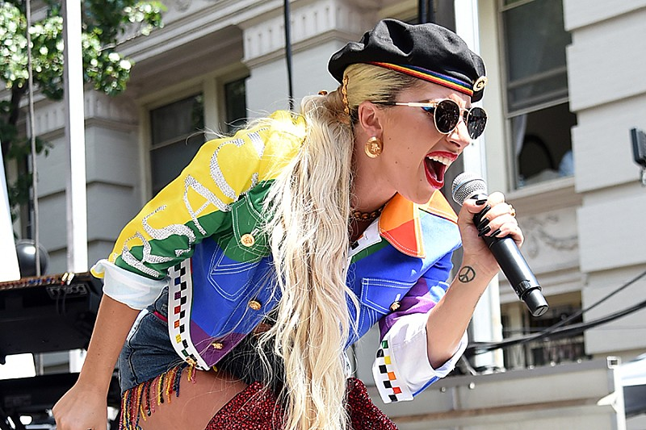
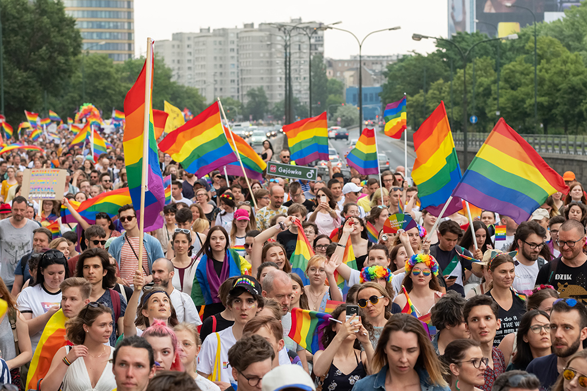

-
News
- 
- 
ジェンダー平等 日本125位に後退 政治参加の分野で格差大きく
世界各国の男女間の平等について調べた調査で、日本は政治参加の分野で格差が大きく、調査対象となった146か国中125位となり、去年の116位から後退しました。
政財界のリーダーが集まるダボス会議の主催者・世界経済フォーラムは2006年から、「経済」、「教育」、「医療へのアクセス」、それに「政治参加」の4つの分野で、各国の男女間の格差を調べ、発表しています。
最新の報告書が21日発表され、調査対象の146か国のうち、男女間の平等が最も進んでいるのは、14年連続でアイスランドとなり、続いて2位がノルウェー、3位がフィンランドと北欧の国々が上位を占めたほか、4位はニュージーランドとなりました。
ジェンダー・ギャップ指数と呼ばれる独自の数値で評価された各国のランキングです。
日本は過去最低の順位に
調査対象の国の数には変動があるため単純に比較はできませんが、今回、日本は過去最低の順位となりました。
特に「政治参加」の評価では、女性の占める割合が、衆議院議員では10%、閣僚では8.3%で、138位となり、最も低いレベルになっているとしています。
報告書では、このままいくと世界全体でジェンダーギャップを解消するには131年かかり、特に政治の分野では162年かかるとして、各国に取り組みを強化するよう求めています。
なぜ私がこのニュースが気になったのか
私は元々LGBTQについて関心がありました。
LADY GAGAさんの「Born This Way」という曲の歌詞に
「たとえゲイでもストレートでも、バイでもレズビアンでも、トランスジェンダーでも、私は正しい道を生きている」という歌詞があり、
すべての人を肯定していて素敵だなと思いました。影響力がある様々な人がLGBTQについて言及しているのになぜ日本はこんなにも「ジェンダー」について遅れている
のだろうと思いこのニュースを取り上げました。
これについてどう考えるか
ジェンダー平等について理解をみんなに深めてもらうには、自ら動かなければならないと思います。
まず自分の意識を高めるために、ジェンダー平等に関する本や記事を読み、関連するニュースや出来事に注意を払っていこうと思いました。
そして性別に関する言葉の使い方を気を付けようと思います。無意識のうちに行われる性差別的な表現や冗談を避けていくのがこの事案についてすぐできる解決法だと思います。